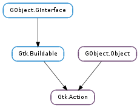

| Subclasses: | Gtk.RecentAction, Gtk.ToggleAction |
|---|
| static | new(name, label, tooltip, stock_id) |
| activate() | |
| block_activate() | |
| connect_accelerator() | |
| create_icon(icon_size) | |
| create_menu() | |
| create_menu_item() | |
| create_tool_item() | |
| disconnect_accelerator() | |
| get_accel_closure() | |
| get_accel_path() | |
| get_always_show_image() | |
| get_gicon() | |
| get_icon_name() | |
| get_is_important() | |
| get_label() | |
| get_name() | |
| get_proxies() | |
| get_sensitive() | |
| get_short_label() | |
| get_stock_id() | |
| get_tooltip() | |
| get_visible() | |
| get_visible_horizontal() | |
| get_visible_vertical() | |
| is_sensitive() | |
| is_visible() | |
| set_accel_group(accel_group) | |
| set_accel_path(accel_path) | |
| set_always_show_image(always_show) | |
| set_gicon(icon) | |
| set_icon_name(icon_name) | |
| set_is_important(is_important) | |
| set_label(label) | |
| set_sensitive(sensitive) | |
| set_short_label(short_label) | |
| set_stock_id(stock_id) | |
| set_tooltip(tooltip) | |
| set_visible(visible) | |
| set_visible_horizontal(visible_horizontal) | |
| set_visible_vertical(visible_vertical) | |
| unblock_activate() |
| Name | Type | Flags | Description |
|---|---|---|---|
| action-group | Gtk.ActionGroup | r/w | The Gtk.ActionGroup this Gtk.Action is associated with, or None (for internal use). |
| always-show-image | bool | r/w | Whether the image will always be shown |
| gicon | Gio.Icon | r/w | The Gio.Icon being displayed |
| hide-if-empty | bool | r/w | When True, empty menu proxies for this action are hidden. |
| icon-name | str | r/w | The name of the icon from the icon theme |
| is-important | bool | r/w | Whether the action is considered important. When True, toolitem proxies for this action show text in Gtk.ToolbarStyle.BOTH_HORIZ mode. |
| label | str | r/w | The label used for menu items and buttons that activate this action. |
| name | str | r/w/c | A unique name for the action. |
| sensitive | bool | r/w | Whether the action is enabled. |
| short-label | str | r/w | A shorter label that may be used on toolbar buttons. |
| stock-id | str | r/w | The stock icon displayed in widgets representing this action. |
| tooltip | str | r/w | A tooltip for this action. |
| visible | bool | r/w | Whether the action is visible. |
| visible-horizontal | bool | r/w | Whether the toolbar item is visible when the toolbar is in a horizontal orientation. |
| visible-overflown | bool | r/w | When True, toolitem proxies for this action are represented in the toolbar overflow menu. |
| visible-vertical | bool | r/w | Whether the toolbar item is visible when the toolbar is in a vertical orientation. |
| Name | Parameters | Return | Description |
|---|---|---|---|
| activate | The “activate” signal is emitted when the action is activated. |
| Name | Type | Access |
|---|---|---|
| object | GObject.Object | r |
Bases: GObject.Object, Gtk.Buildable
In GTK+ 3.10, Gtk.Action has been deprecated. Use Gio.Action instead, and associate actions with Gtk.Actionable widgets. Use Gio.MenuModel for creating menus with Gtk.Menu.new_from_model ().
Actions represent operations that the user can be perform, along with some information how it should be presented in the interface. Each action provides methods to create icons, menu items and toolbar items representing itself.
As well as the callback that is called when the action gets activated, the following also gets associated with the action:
The action will also have some state information:
Apart from regular actions, there are toggle actions, which can be toggled between two states and radio actions, of which only one in a group can be in the “active” state. Other actions can be implemented as Gtk.Action subclasses.
Each action can have one or more proxy widgets. To act as an action proxy, widget needs to implement Gtk.Activatable interface. Proxies mirror the state of the action and should change when the action’s state changes. Properties that are always mirrored by proxies are Gtk.Action :sensitive and Gtk.Action :visible. Gtk.Action :gicon, Gtk.Action :icon-name, Gtk.Action :label, Gtk.Action :short-label and Gtk.Action :stock-id properties are only mirorred if proxy widget has Gtk.Activatable :use-action-appearance property set to True.
When the proxy is activated, it should activate its action.
| Parameters: | |
|---|---|
| Returns: | a new Gtk.Action |
| Return type: |
Creates a new Gtk.Action object. To add the action to a Gtk.ActionGroup and set the accelerator for the action, call Gtk.ActionGroup.add_action_with_accel (). See for information on allowed action names.
The “activate” signal is emitted when the action is activated.
Disable activation signals from the action
This is needed when updating the state of your proxy Gtk.Activatable widget could result in calling Gtk.Action.activate (), this is a convenience function to avoid recursing in those cases (updating toggle state for instance).
Installs the accelerator for action if action has an accel path and group. See Gtk.Action.set_accel_path () and Gtk.Action.set_accel_group ()
Since multiple proxies may independently trigger the installation of the accelerator, the action counts the number of times this function has been called and doesn’t remove the accelerator until Gtk.Action.disconnect_accelerator () has been called as many times.
| Parameters: | icon_size (int) – the size of the icon that should be created. |
|---|---|
| Returns: | a widget that displays the icon for this action. |
| Return type: | Gtk.Widget |
This function is intended for use by action implementations to create icons displayed in the proxy widgets.
| Returns: | the menu item provided by the action, or None. |
|---|---|
| Return type: | Gtk.Widget |
If action provides a Gtk.Menu widget as a submenu for the menu item or the toolbar item it creates, this function returns an instance of that menu.
| Returns: | a menu item connected to the action. |
|---|---|
| Return type: | Gtk.Widget |
Creates a menu item widget that proxies for the given action.
| Returns: | a toolbar item connected to the action. |
|---|---|
| Return type: | Gtk.Widget |
Creates a toolbar item widget that proxies for the given action.
Undoes the effect of one call to Gtk.Action.connect_accelerator ().
| Returns: | the accel closure for this action. The returned closure is owned by GTK+ and must not be unreffed or modified. |
|---|---|
| Return type: | GObject.Closure |
Returns the accel closure for this action.
| Returns: | the accel path for this action, or None if none is set. The returned string is owned by GTK+ and must not be freed or modified. |
|---|---|
| Return type: | str |
Returns the accel path for this action.
| Returns: | True if the menu item proxies will always show their image |
|---|---|
| Return type: | bool |
Returns whether action ‘s menu item proxies will always show their image, if available.
| Returns: | The action’s Gio.Icon if one is set. |
|---|---|
| Return type: | Gio.Icon |
Gets the gicon of action.
| Returns: | whether action is important |
|---|---|
| Return type: | bool |
Checks whether action is important or not
| Returns: | the name of the action. The string belongs to GTK+ and should not be freed. |
|---|---|
| Return type: | str |
Returns the name of the action.
| Returns: | a GLib.SList of proxy widgets. The list is owned by GTK+ and must not be modified. |
|---|---|
| Return type: | [Gtk.Widget] |
Returns the proxy widgets for an action. See also Gtk.Activatable.get_related_action ().
| Returns: | True if the action itself is sensitive. |
|---|---|
| Return type: | bool |
Returns whether the action itself is sensitive. Note that this doesn’t necessarily mean effective sensitivity. See Gtk.Action.is_sensitive () for that.
| Returns: | the short label text. |
|---|---|
| Return type: | str |
Gets the short label text of action.
| Returns: | True if the action itself is visible. |
|---|---|
| Return type: | bool |
Returns whether the action itself is visible. Note that this doesn’t necessarily mean effective visibility. See Gtk.Action.is_sensitive () for that.
| Returns: | whether action is visible when horizontal |
|---|---|
| Return type: | bool |
Checks whether action is visible when horizontal
| Returns: | whether action is visible when horizontal |
|---|---|
| Return type: | bool |
Checks whether action is visible when horizontal
| Returns: | True if the action and its associated action group are both sensitive. |
|---|---|
| Return type: | bool |
Returns whether the action is effectively sensitive.
| Returns: | True if the action and its associated action group are both visible. |
|---|---|
| Return type: | bool |
Returns whether the action is effectively visible.
| Parameters: | accel_group (Gtk.AccelGroup or None) – a Gtk.AccelGroup or None |
|---|
Sets the Gtk.AccelGroup in which the accelerator for this action will be installed.
| Parameters: | accel_path (str) – the accelerator path |
|---|
Sets the accel path for this action. All proxy widgets associated with the action will have this accel path, so that their accelerators are consistent.
Note that accel_path string will be stored in a GLib.Quark. Therefore, if you pass a static string, you can save some memory by interning it first with GLib.intern_static_string ().
| Parameters: | always_show (bool) – True if menuitem proxies should always show their image |
|---|
Sets whether action ‘s menu item proxies will always show their image, if available.
Use this if the menu item would be useless or hard to use without their image.
| Parameters: | icon_name (str) – the icon name to set |
|---|
Sets the icon name on action
| Parameters: | is_important (bool) – True to make the action important |
|---|
Sets whether the action is important, this attribute is used primarily by toolbar items to decide whether to show a label or not.
| Parameters: | sensitive (bool) – True to make the action sensitive |
|---|
Sets the ::sensitive property of the action to sensitive. Note that this doesn’t necessarily mean effective sensitivity. See Gtk.Action.is_sensitive () for that.
| Parameters: | short_label (str) – the label text to set |
|---|
Sets a shorter label text on action.
| Parameters: | visible (bool) – True to make the action visible |
|---|
Sets the ::visible property of the action to visible. Note that this doesn’t necessarily mean effective visibility. See Gtk.Action.is_visible () for that.
| Parameters: | visible_horizontal (bool) – whether the action is visible horizontally |
|---|
Sets whether action is visible when horizontal
| Parameters: | visible_vertical (bool) – whether the action is visible vertically |
|---|
Sets whether action is visible when vertical
Reenable activation signals from the action